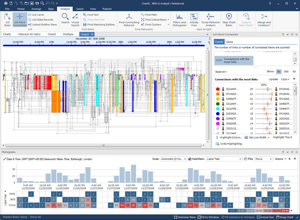

Ian Kitchen
UX Designer

I'm a UX Designer working in the i2 group at IBM.
My focus has been on the design of software to support the investigation of criminal networks through the analysis of relationships, financial transactions and communications data.
I work by fully understanding user's needs and painpoints, validating assumptions and then mapping out how new capabilities can fit into the workflow. Creating scenarios with users in order to test proposals against is key to working this way.
I believe involving the wider product team in this process is essential to a project's success.
My focus has been on the design of software to support the investigation of criminal networks through the analysis of relationships, financial transactions and communications data.
I work by fully understanding user's needs and painpoints, validating assumptions and then mapping out how new capabilities can fit into the workflow. Creating scenarios with users in order to test proposals against is key to working this way.
I believe involving the wider product team in this process is essential to a project's success.
What can I do for you?

Analyse user needs and pain points
Lead ideation sessions to identify innovative solutions
Work with engineering to ensure design concepts can be implemented
Produce low-fi prototypes to test workflow against realistic scenarios
Craft high-fi interactive prototypes to test affordance and feedback
Work with front end developers on the detail of a design, including visual design
Lead ideation sessions to identify innovative solutions
Work with engineering to ensure design concepts can be implemented
Produce low-fi prototypes to test workflow against realistic scenarios
Craft high-fi interactive prototypes to test affordance and feedback
Work with front end developers on the detail of a design, including visual design
What have I done?

Application Refresh
Activity View

Measuring Connectivity
1
2
3
4
5
6
7
8
9
0
1
2